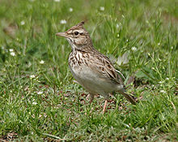
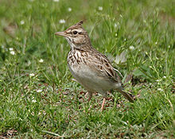

| Crested Lark | |
|---|---|
|  | |
| At Sultanpur National Park in Haryana, India | |
| Conservation status | |
| Binomial name | |
| Galerida cristata (Linnaeus, 1758) |
| Crested Lark | |
|---|---|
|  | |
| At Sultanpur National Park in Haryana, India | |
| Conservation status | |
| Binomial name | |
| Galerida cristata (Linnaeus, 1758) |
The Crested Lark, Galerida cristata, breeds across most of temperate Eurasia from Portugal to northeast China and eastern India, and in Africa south to Niger. It is non-migratory, and the sedentary nature of this species is illustrated by the fact that it is only a very rare vagrant to Great Britain, despite breeding as close as northern France.
This is a common bird of dry open country and cultivation. It nests on the ground, laying two or three eggs. Its food is weed seeds and insects, the latter especially in the breeding season.
This is a smallish lark, slightly larger and plumper than the Skylark. It has a long spiky erectile crest. It is greyer than the Skylark, and lacks the white wing and tail edges of that species.
In flight it shows reddish underwings. The body is mainly dark-streaked grey above and whitish below. The song is melodious and varied, with mournful whistles and mimicry included.
Some care must be taken to distinguish this lark, which has many subspecies, from its close relatives in areas where they also occur. In the west of its range the Thekla Lark, Galerida theklae, is very similar, as is the Malabar Lark, Galerida malabarica, in western India.

_at_Sultanpur_I_Picture_118.jpg){kind=link}